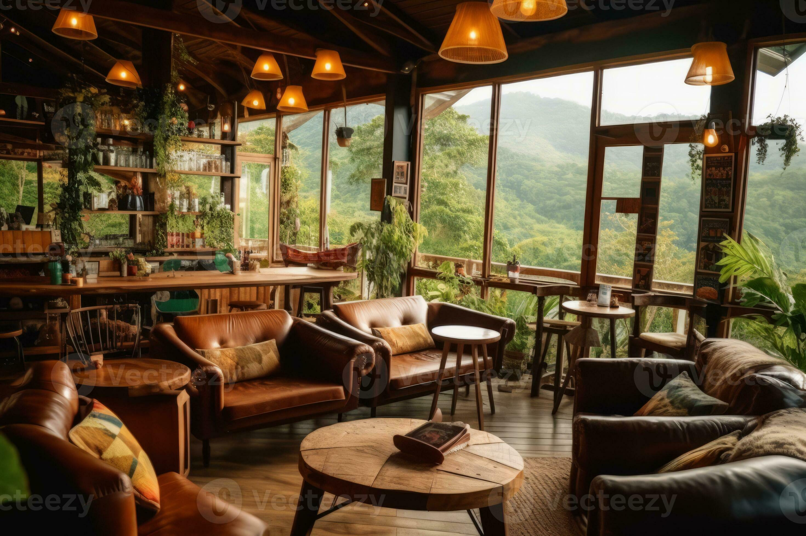

Our story
Aroma Coffee & Tea House was established in 2015 by a group of friends who shared a passion for good coffee and tea. They noticed that many people could not easily find a comfortable place serving high-quality, freshly prepared drinks, so they opened a small shop to fill that gap. Over the years, it has grown into a favourite spot for students, professionals, and families.

Our mission
Our mission is to serve high-quality coffee and tea made from carefully selected ingredients, while providing friendly service and a welcoming space for all our customers. We are also committed to supporting local farmers and sourcing responsibly.
Our vision
Our vision is to become a leading and trusted coffee and tea brand, known for quality, sustainability, and a love for community. We hope to inspire people to slow down and enjoy every cup.